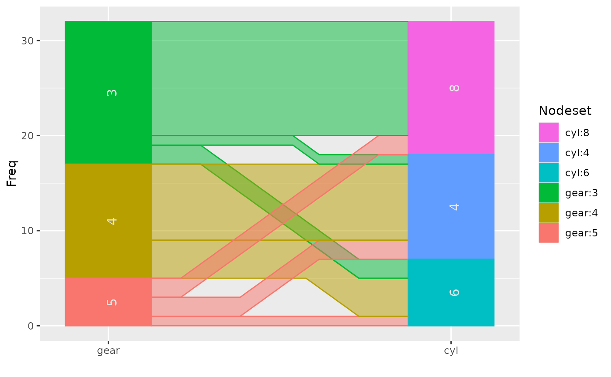
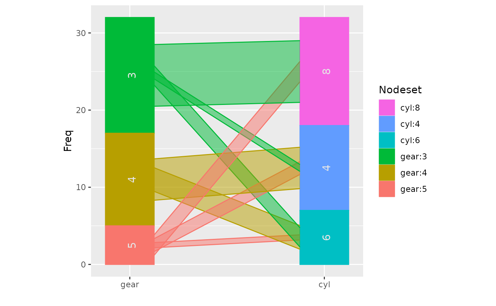
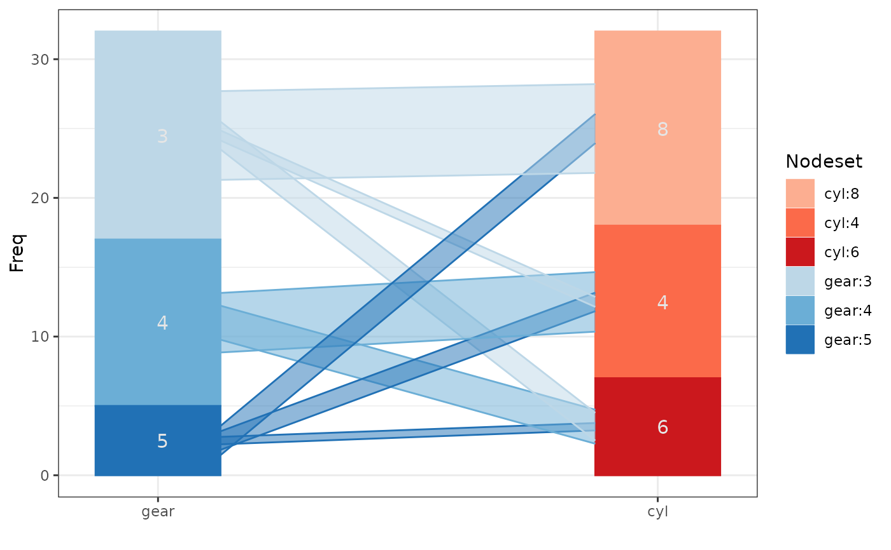
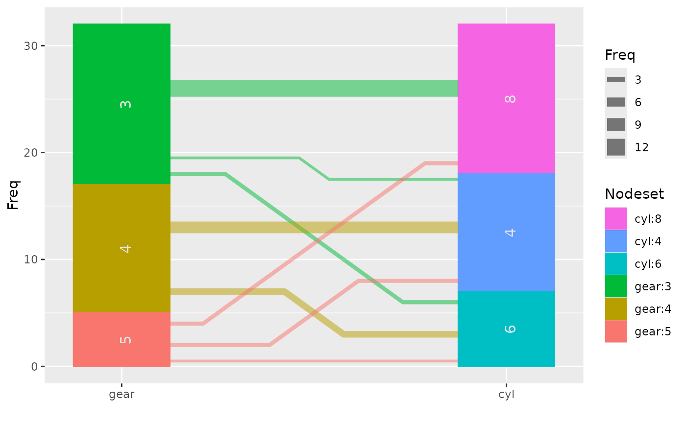
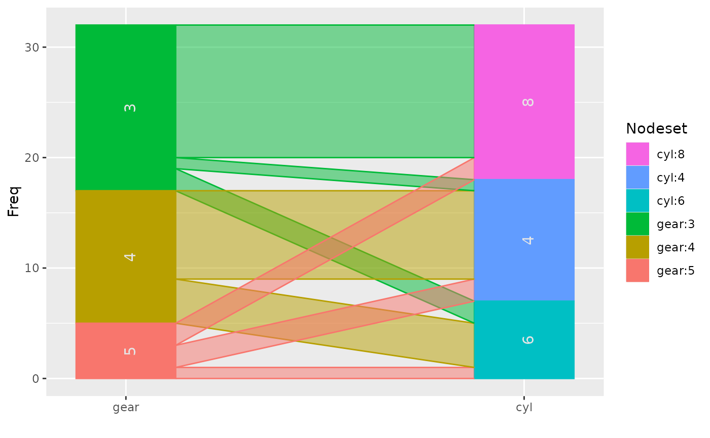
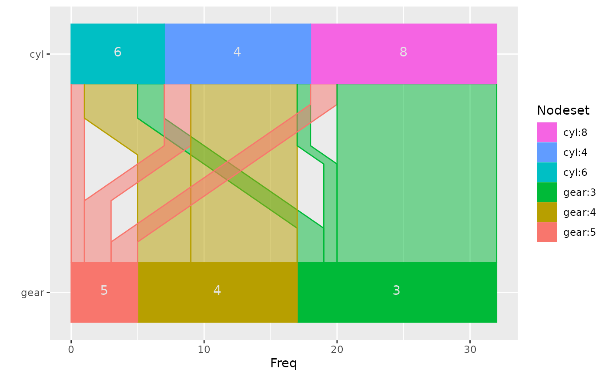
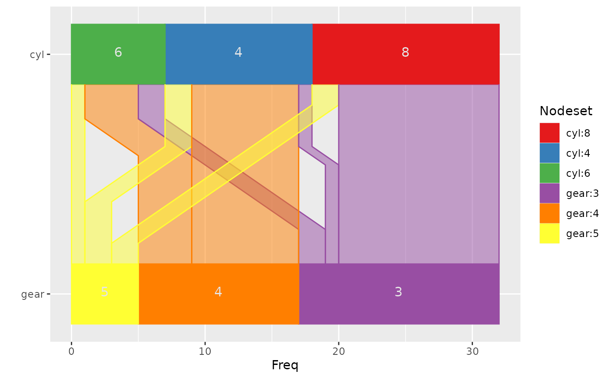
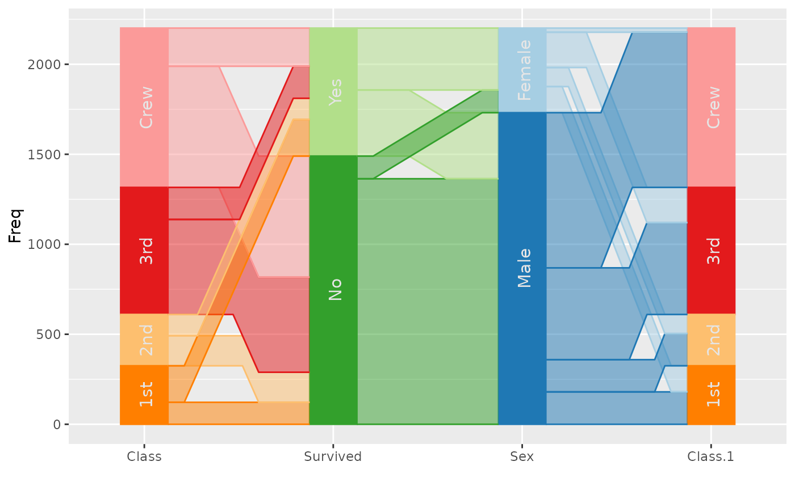
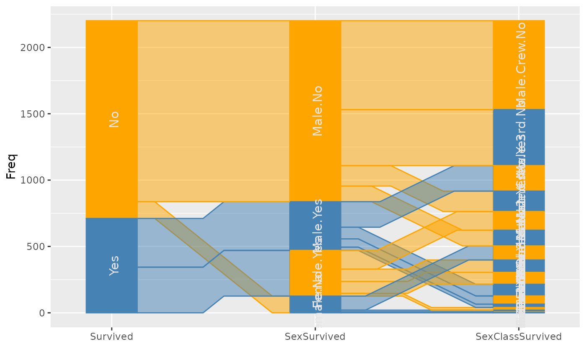
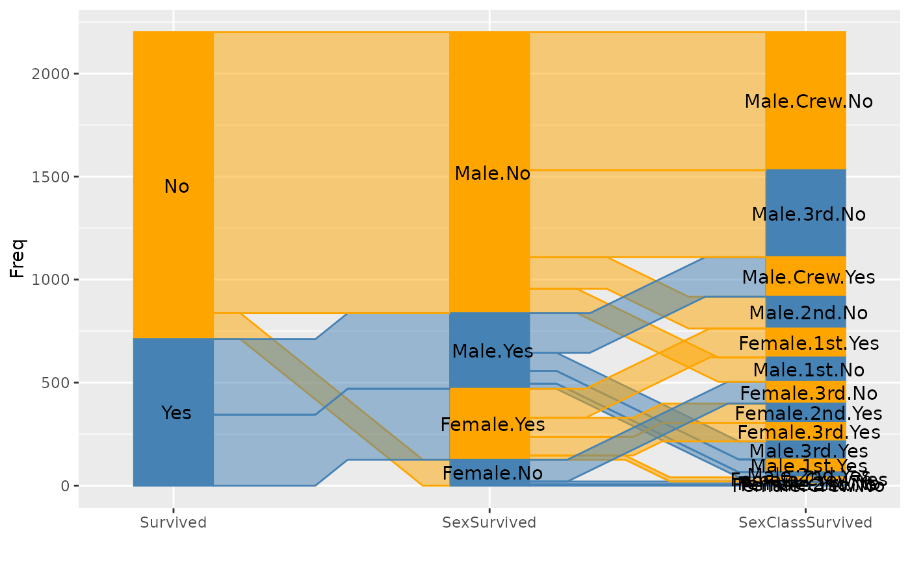

ggparallel implements and combines different types of parallel
coordinate plots for categorical data: hammock plots, parallel sets plots,
common angle plots, and common angle plots with a hammock-like adjustment
for line widths.
Usage
ggparallel(
vars = list(),
data,
weight = NULL,
method = "angle",
alpha = 0.5,
width = 0.25,
order = 1,
ratio = NULL,
asp = NULL,
label = TRUE,
label.colour = "grey90",
label.size = 4,
text.angle = 90,
text.offset = NULL,
same.level = FALSE,
...
)Arguments
- vars
list of variable names to be included in the plotting. Order of the variables is preserved in the display
- data
data frame
- weight
weighting variable - use character string
- method
plotting method to use - one of
angle,adj.angle,parset, orhammock, for a hammock plot the aspect ratio needs to be fixed.- alpha
level of alpha blending for the fill color in ribbons, value has to be between 0 and 1, defaults to 0.5.
- width
width of variables
- order
flag variable with three levels -1, 0, 1 for levels in decreasing order, levels in increasing order and levels unchanged. This variable can be either a scalar or a vector
- ratio
used for methods with angle adjustments (method =
'hammock', 'adj.angle'): specifies the height (width for horizontal displays) of the widest line as ratio of the overall display height (width for horizontal displays).- asp
aspect ratio of the plot - it will be set to a default of 1 in the case of hammock plots.
- label
binary variable (vector), whether labels should be shown.
- label.colour
character of colour in which the label should be shown. Ignored, if `label` is FALSE.
- label.size
numeric value to determine the size in which labels are shown, defaults to 4
- text.angle
numeric value to determine the angle under which labels are shown.
- text.offset
(vector) of values for offsetting the labels
- same.level
are all variables using the same levels? If yes, simplify the labelling
- ...
passed on directly to all of the ggplot2 commands
Value
returns a ggplot2 object that can be plotted directly or used as base layer for additional modifications.
Details
Parallel sets have been suggested by kosara:2006 as a visualization technique to incorporate categorical variables into a parallel coordinate plot introduced by wegman:1990 and inselberg:1985. The parallel sets implemented here are reduced to representations of neighboring two-dimensional relationships only rather than the hierarchical version originally suggested.
Both versions, however, show perceptual problems with interpreting line widths, leading to potentially wrong conclusions about the data. The hammock display, introduced by schonlau:2003, and the common angle plots are two approaches at fixing this problem: in Hammock plots the linewidth is adjusted by a factor countering the strength of the illusion, in the common angle plot all lines are adjusted to show the same angle - making line widths again comparable across ribbons.
Additionally, we can also adjust ribbons in the common angle display for the
angle, to make them appear having the same width (or height) across the
display. We refer to this method as adj.angle.
Examples
data(mtcars)
ggparallel(list("gear", "cyl"), data=mtcars)

ggparallel(list("gear", "cyl"), data=mtcars, method="hammock", ratio=0.25)

require(RColorBrewer)
require(ggplot2)
cols <- c(brewer.pal(4, "Reds")[-1], brewer.pal(4, "Blues")[-1])
ggparallel(list("gear", "cyl"), ratio=0.2, data=mtcars,
method="hammock", text.angle=0) +
scale_fill_manual(values=cols) + scale_colour_manual(values=cols) +
theme_bw()
#> Scale for fill is already present.
#> Adding another scale for fill, which will replace the existing scale.
#> Scale for colour is already present.
#> Adding another scale for colour, which will replace the existing scale.

## combination of common angle plot and hammock adjustment:
ggparallel(list("gear", "cyl"), data=mtcars, method="adj.angle",
ratio=2)

## compare with method='parset'
ggparallel(list("gear", "cyl"), data=mtcars, method='parset')

## flip plot and rotate text
ggparallel(list("gear", "cyl"), data=mtcars, text.angle=0) +
coord_flip()

## change colour scheme
ggparallel(list("gear", "cyl"), data=mtcars, text.angle=0) +
coord_flip() +
scale_fill_brewer(palette="Set1") +
scale_colour_brewer(palette="Set1")
#> Scale for fill is already present.
#> Adding another scale for fill, which will replace the existing scale.
#> Scale for colour is already present.
#> Adding another scale for colour, which will replace the existing scale.

## example with more than two variables:
titanic <- as.data.frame(Titanic)
ggparallel(names(titanic)[c(1,4,2,1)], order=0, titanic, weight="Freq") +
scale_fill_brewer(palette="Paired", guide="none") +
scale_colour_brewer(palette="Paired", guide="none")
#> Warning: attributes are not identical across measure variables; they will be dropped
#> Scale for fill is already present.
#> Adding another scale for fill, which will replace the existing scale.
#> Scale for colour is already present.
#> Adding another scale for colour, which will replace the existing scale.

if (FALSE) { # \dontrun{
cols <- c(brewer.pal(5,"Blues")[-1], brewer.pal(3, "Oranges")[-1],
brewer.pal(3, "Greens")[-1])
ggparallel(names(titanic)[c(1,4,2,1)], order=0, titanic, weight="Freq") +
scale_fill_manual(values=cols, guide="none") +
scale_colour_manual(values=cols, guide="none") + theme_bw()
## hammock plot with same width lines
ggparallel(names(titanic)[c(1,4,2,3)], titanic, weight=1, asp=0.5,
method="hammock", ratio=0.2, order=c(0,0)) +
theme( legend.position="none") +
scale_fill_brewer(palette="Paired") +
scale_colour_brewer(palette="Paired")
## hammock plot with line widths adjusted by frequency
ggparallel(names(titanic)[c(1,4,2,3)], titanic, weight="Freq",
asp=0.5, method="hammock", order=c(0,0), text.angle=0,
width=0.45) +
theme( legend.position="none")
## biological examples: genes and pathways
data(genes)
cols <- c(rep("grey80", 24), brewer.pal("YlOrRd", n = 9))
genes$chrom <- factor(genes$chrom, levels=c(paste("chr", 1:22, sep=""), "chrX", "chrY"))
ggparallel(list("path", "chrom"), text.offset=c(0.03, 0,-0.03),
data = genes, width=0.1, order=c(1,0), text.angle=0,
color="white",
factorlevels = c(sapply(unique(genes$chrom), as.character),
unique(genes$path))) +
scale_fill_manual(values = cols, guide="none") +
scale_colour_manual(values = cols, guide="none") +
coord_flip()
} # }
data(Titanic)
titanic <- as.data.frame(Titanic)
titanic$SexSurvived <- with(titanic, interaction(Sex, Survived))
titanic$SexClassSurvived <- with(titanic, interaction(Sex,Class, Survived))
ggparallel(vars=list("Survived", "SexSurvived", "SexClassSurvived"), weight="Freq", data=titanic) +
theme(legend.position="none") +
scale_fill_manual(values = rep(c("Orange", "Steelblue"), 14)) +
scale_colour_manual(values = rep(c("Orange", "Steelblue"), 14))
#> Scale for fill is already present.
#> Adding another scale for fill, which will replace the existing scale.
#> Scale for colour is already present.
#> Adding another scale for colour, which will replace the existing scale.

###########
p1 <- ggparallel(vars=list("Survived", "SexSurvived", "SexClassSurvived"),
weight="Freq", data=titanic, label = FALSE) +
theme(legend.position="none") +
scale_fill_manual(values = rep(c("Orange", "Steelblue"), 14)) +
scale_colour_manual(values = rep(c("Orange", "Steelblue"), 14))
#> Scale for fill is already present.
#> Adding another scale for fill, which will replace the existing scale.
#> Scale for colour is already present.
#> Adding another scale for colour, which will replace the existing scale.
p2 <- ggparallel(vars=list("Survived", "SexSurvived", "SexClassSurvived"),
weight="Freq", data=titanic, label = TRUE) +
theme(legend.position="none") +
scale_fill_manual(values = rep(c("Orange", "Steelblue"), 14)) +
scale_colour_manual(values = rep(c("Orange", "Steelblue"), 14))
#> Scale for fill is already present.
#> Adding another scale for fill, which will replace the existing scale.
#> Scale for colour is already present.
#> Adding another scale for colour, which will replace the existing scale.
ggp2 <- ggplot_build(p2)@data
p1 + geom_text(aes(x = x, y=y, label = label), data = ggp2[[2]])
